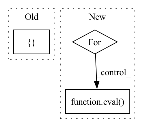

Pattern ID :41342
Before Change
from albumentations.pytorch import ToTensorV2
def get_train_transforms(cfg):
return Compose([
// RandomResizedCrop(cfg["img_size"], cfg["img_size"]),
Resize(cfg["img_size"], cfg["img_size"]),
Transpose(p=0.5),
HorizontalFlip(p=0.5),
VerticalFlip(p=0.5),
ShiftScaleRotate(p=0.5),
HueSaturationValue(hue_shift_limit=0.2, sat_shift_limit=0.2, val_shift_limit=0.2, p=0.5),
RandomBrightnessContrast(brightness_limit=(-0.1, 0.1), contrast_limit=(-0.1, 0.1), p=0.5),
Normalize(mean=[0.485, 0.456, 0.406], std=[0.229, 0.224, 0.225], max_pixel_value=255.0, p=1.0),
CoarseDropout(p=0.5),
Cutout(p=0.5),
ToTensorV2(p=1.0)After Change
def get_train_transforms(cfg):
default_transform_list = [Resize(cfg["img_size"], cfg["img_size"])]
//add each tsf from your config
for tsf_item, value in cfg["train_aug"].items():
if value is not None:
default_transform_list.append(eval( tsf_item) (*value))
default_transform_list.append(Normalize(mean=[0.485, 0.456, 0.406], std=[0.229, 0.224, 0.225], max_pixel_value=255.0, p=1.0))
default_transform_list.append(ToTensorV2(p=1.0))In pattern: SUPERPATTERN
Frequency: 3
Non-data size: 3
Instances Fragment ID: 116410916
Project Name: stephenfang51/image_classification_pytorch
Commit Name: c8f5e0e73775bc012314f7a2582dcc49b4ddb74d
Time: 2021-10-15
Author: r851000@gmail.com
File Name: data_load/data_transforms.py
M Class Name: AnonimousClass
N Class Name: AnonimousClass
M Method Name: get_train_transforms(1)
N Method Name: get_train_transforms(1)
M Parent Class:
N Parent Class:
M File Name: data_load/data_transforms.py
N File Name: data_load/data_transforms.py
M Start Line: 10
M End Line: 23
N Start Line: 9
N End Line: 18
Before Change
}
// 这种情况下不对 history_loc history_tim 做补齐
else:
self.pad_item = {
"current_loc": loc_pad,
"history_loc": loc_pad,
"current_tim": tim_pad,
"history_tim": tim_pad,
}
self.data_feature = {
"loc_size": self.loc_id + 1,
"tim_size": self.tim_max + 2,
"uid_size": self.uid,After Change
}
// 构建 poi 坐标字典
poi_coor = {}
for index, row in self.poi_profile.iterrows():
geo_id = row["geo_id"]
coor = eval( row["coordinates"])
poi_coor[str(geo_id)] = coor
self.data_feature = {
"loc_size": self.loc_id + 1,
"tim_size": self.tim_max + 2, Fragment ID: 116410917
Project Name: libcity/bigscity-libcity
Commit Name: d5676546c95422958339c2a53651f6a0aa373a31
Time: 2022-03-07
Author: 842595644@qq.com
File Name: libcity/data/dataset/trajectory_encoder/cara_encoder.py
M Class Name: CARATrajectoryEncoder
N Class Name: CARATrajectoryEncoder
M Method Name: gen_data_feature(1)
N Method Name: gen_data_feature(1)
M Parent Class: AbstractTrajectoryEncoder
N Parent Class: AbstractTrajectoryEncoder
M File Name: libcity/data/dataset/trajectory_encoder/cara_encoder.py
N File Name: libcity/data/dataset/trajectory_encoder/cara_encoder.py
M Start Line: 111
M End Line: 126
N Start Line: 77
N End Line: 94
Before Change
], p=1.)
def get_valid_transforms(cfg):
return Compose([
// CenterCrop(cfg["img_size"], cfg["img_size"], p=1.),
Resize(cfg["img_size"], cfg["img_size"]),
Normalize(mean=[0.485, 0.456, 0.406], std=[0.229, 0.224, 0.225], max_pixel_value=255.0, p=1.0),
ToTensorV2(p=1.0)After Change
default_transform_list = [
Resize(cfg["img_size"], cfg["img_size"])
]
for tsf_item, value in cfg["val_aug"].items():
if value is not None:
default_transform_list.append(eval( tsf_item) (*value))
default_transform_list.append(Normalize(mean=[0.485, 0.456, 0.406], std=[0.229, 0.224, 0.225], max_pixel_value=255.0, p=1.0))
default_transform_list.append(ToTensorV2(p=1.0)) Fragment ID: 116410918
Project Name: stephenfang51/image_classification_pytorch
Commit Name: c8f5e0e73775bc012314f7a2582dcc49b4ddb74d
Time: 2021-10-15
Author: r851000@gmail.com
File Name: data_load/data_transforms.py
M Class Name: AnonimousClass
N Class Name: AnonimousClass
M Method Name: get_valid_transforms(1)
N Method Name: get_valid_transforms(1)
M Parent Class:
N Parent Class:
M File Name: data_load/data_transforms.py
N File Name: data_load/data_transforms.py
M Start Line: 26
M End Line: 31
N Start Line: 21
N End Line: 30